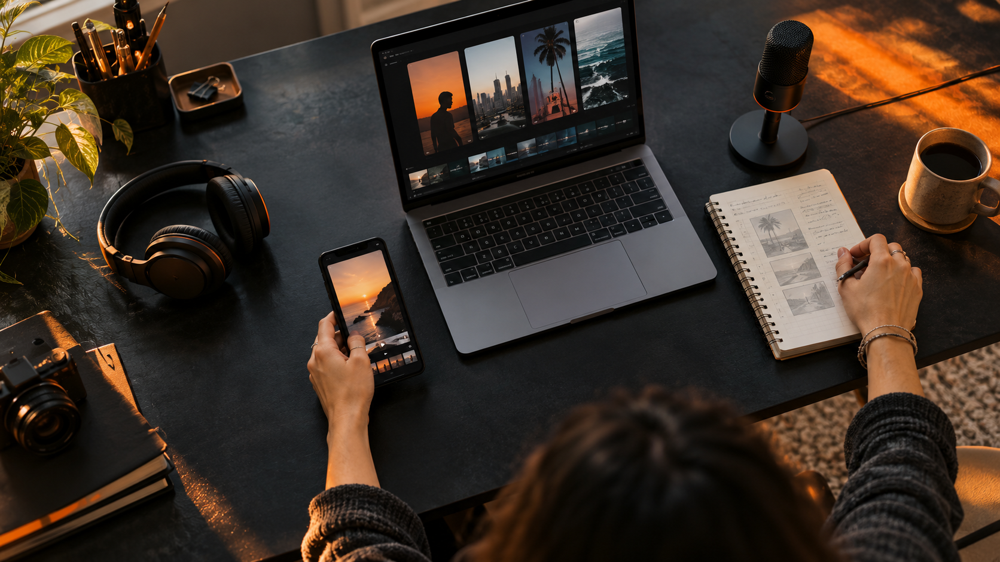
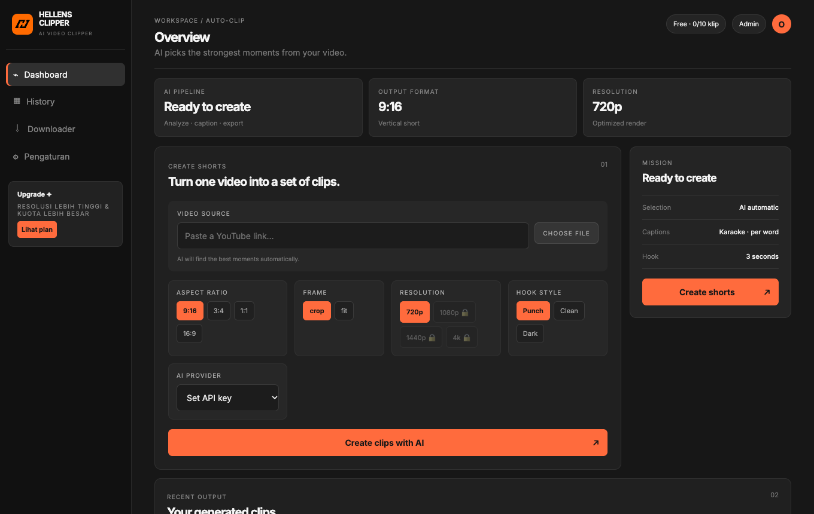
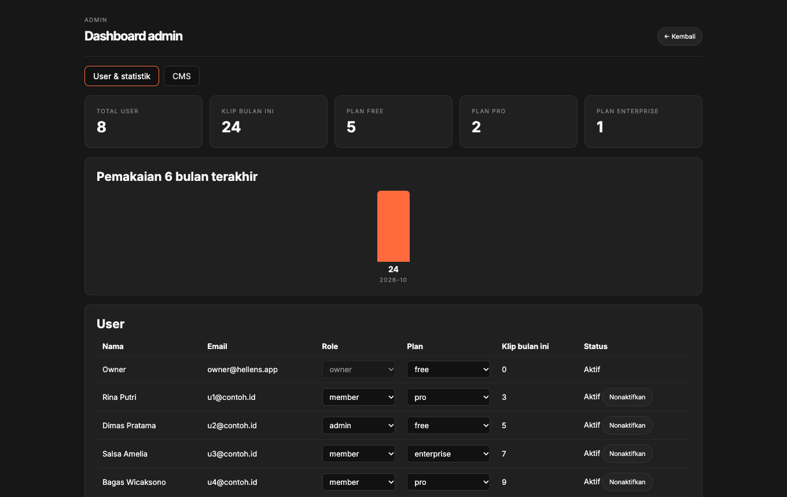
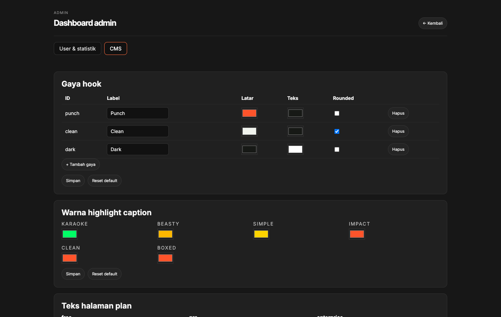

Auto-pilot AI
Satu link menghasilkan beberapa short. Pemotongan di batas kalimat, dan klip bisa menggabungkan beberapa potongan tanpa bagian yang membosankan.
Tempel link YouTube atau unggah video. AI memilih momen terbaik, menambahkan caption karaoke per kata dan hook, lalu memberi skor A–D supaya kamu tahu mana yang paling layak naik.
macOS (Apple Silicon) · Windows 64-bit · Gratis untuk mulai

LOCAL-FIRST WORKFLOW Transkrip siap dianalisisHellens Clipper membantu kamu menemukan kalimat yang paling layak ditonton ulang, lalu mengubahnya menjadi format siap posting—tanpa memindahkan file mentah ke server.
Lihat semua fiturKamu tidak perlu mencari momen sendiri atau memotong frame demi frame.
Masukkan link YouTube, atau pilih file video dari komputermu. Pilih rasio, resolusi, dan gaya hook.
Whisper menyalin ucapan di komputermu, lalu AI memilih momen yang punya hook kuat dan bisa dipahami tanpa konteks.
Setiap klip dilengkapi judul, deskripsi, hashtag, skor, dan alasan pemilihan. Urut dari yang terbaik.
Satu link menghasilkan beberapa short. Pemotongan di batas kalimat, dan klip bisa menggabungkan beberapa potongan tanpa bagian yang membosankan.
Kata yang sedang diucapkan menyala satu per satu. Pilih preset karaoke, beasty, simple, impact, clean, atau boxed.
9:16, 3:4, 1:1, dan 16:9 dengan crop atau background blur. Resolusi 360p sampai 4K, dengan zoom otomatis ke wajah pembicara.
Badge teks pembuka yang ditulis AI. Gaya, warna, dan bentuknya bisa diatur dari CMS tanpa mengubah kode.
Unduh, transkripsi, dan render berjalan di komputermu. API key AI disimpan lokal dan tidak pernah lewat server kami.
Role owner, admin, dan member. Plan dengan kuota bulanan, dashboard admin, audit log, dan nonaktifkan akun kapan saja.
Tangkapan layar asli dari aplikasi (data pada dashboard admin adalah contoh).



Server hanya mengurus akun, plan, dan jumlah klip yang kamu buat. Video, audio, dan hasil render tidak pernah diunggah. Yang dikirim ke penyedia AI pilihanmu hanya teks transkrip.
Kuota dihitung per klip yang dirender, dan dikembalikan otomatis jika render gagal.
Gratis
Untuk mencoba
Hubungi kami
Untuk kreator aktif
Hubungi kami
Untuk tim & agensi
Harga akan ditentukan per plan. Perubahan plan saat ini dilakukan oleh admin; pembayaran online belum tersedia.
Installer sudah membawa ffmpeg, yt-dlp, Whisper, dan model transkripsi. Tidak ada yang perlu dipasang terpisah.
Apple Silicon (M1 dan yang lebih baru)
.dmg, seret ke ApplicationsWindows 10/11, 64-bit
.exe (NSIS)Tidak. Unduh, transkripsi, pemotongan, dan render berlangsung di komputermu. Server hanya menyimpan akun, plan, dan hitungan klip. Penyedia AI yang kamu pilih menerima teks transkrip (bukan videonya) untuk memilih momen.
Ya, untuk masuk ke akun, mengunduh video dari YouTube, dan memanggil penyedia AI. Pemotongan dan render sendiri berjalan tanpa internet.
Ya. Isi API key dari Gemini, OpenAI, Claude, Groq, Mistral, atau DeepSeek di halaman Pengaturan. Key disimpan di komputermu dengan izin file khusus pemilik.
Whisper mendeteksi bahasa otomatis. Untuk video berbahasa Indonesia, kamu bisa menetapkan bahasa agar akurasinya lebih tinggi.
Saat ini installer tersedia untuk macOS Apple Silicon dan Windows 64-bit. Mac Intel dan Linux belum tersedia.
Aplikasi belum dinotarisasi (macOS) dan belum ditandatangani (Windows), sehingga sistem menampilkan peringatan. Di macOS klik-kanan aplikasi lalu pilih Buka. Di Windows pilih “More info” lalu “Run anyway”.
Pasang aplikasinya, isi API key, dan buat klip pertamamu dalam hitungan menit.
Unduh aplikasi